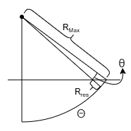
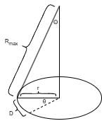

Single-Beam Sonar
Holoocean has three different single-beam sonar sensor implementations:
These implementations have different tradeoffs in accuracy, speed, and memory usage.
Sensor |
Scanning Method |
General Speed |
Resolution (at Comparable Speed) |
Scene Representation |
Requirements |
|---|---|---|---|---|---|
Octree-based sampling |
Slow on first run, faster on subsequent runs |
Low-Medium |
Object collision meshes as octrees |
Memory space for octree storage |
|
CPU raycasting |
Fast, scales with number of rays |
Medium-High |
Object collision meshes |
CPU resources proporional to ray count |
|
GPU rendering |
Fast, depends on GPU capabilities |
High |
Rendered scene (image-based) |
Dedicated GPU |
Note
See Visualizing Singlebeam Sonar for examples of how to use this sensor.
Octree Single-Beam Sonar
Simulates a single-beam sonar using octrees. Returns a 1D array of return strength at each range bin.
See SinglebeamSonar for the python API.
Example sensor definition:
{
"sensor_type": "SinglebeamSonar",
"socket": "SonarSocket",
"Hz": 10,
"configuration": {
"OpeningAngle": 30,
"RangeMin": 0.5,
"RangeMax": 30,
"RangeBins": 1000,
"AddSigma": 0,
"MultSigma": 0,
"RangeSigma": 0.1,
"ShowWarning": True,
"InitOctreeRange": 40,
"ViewRegion": False,
"ViewOctree": -10,
"WaterDensity": 997,
"WaterSpeedSound": 1480,
"UseApprox": True
}
}
Raycast Single-Beam Sonar
Simulates a single-beam sonar using raycasting. Returns a 1D array of return strength at each range bin.
See RaycastSinglebeamSonar for the python API.
Example sensor definition:
{
"sensor_type": "RaycastSinglebeamSonar",
"socket": "SonarSocket",
"Hz": 10,
"configuration": {
"OpeningAngle": 30,
"RangeMin": 0.5,
"RangeMax": 30,
"RangeBins": 1000,
"AddSigma": 0,
"MultSigma": 0,
"RangeSigma": 0.1,
"ViewRays": False,
"ViewRegion": False,
"WaterDensity": 997,
"WaterSpeedSound": 1480,
"IgnorePlants": False
}
}
Semantic Raycast Single-Beam Sonar
Simulates a single-beam sonar using raycasting, but unlike the basic raycast version, it returns a 2D array of return strength at each range bin, and the top N contributing labels strength and label IDs.
See SemanticRaycastSinglebeamSonar for the python API.
Example sensor definition:
{
"sensor_type": "SemanticRaycastSinglebeamSonar",
"socket": "SonarSocket",
"Hz": 10,
"configuration": {
"OpeningAngle": 30,
"RangeMin": 0.5,
"RangeMax": 30,
"RangeBins": 1000,
"UseTags": True,
"AddSigma": 0,
"MultSigma": 0,
"RangeSigma": 0.1,
"ViewPoints": False,
"ViewRays": False,
"ViewRegion": False,
"WaterDensity": 997,
"WaterSpeedSound": 1480,
"IgnorePlants": False
}
}
GPU Single-Beam Sonar
Simulates a single-beam sonar using GPU rendering. Returns a 1D array of return strength at each range bin. Utilizes the GPU rendering pipeline, for faster simulation speed.
See GPUSinglebeamSonar for the python API.
Example sensor definition:
{
"sensor_type": "GPUSinglebeamSonar",
"socket": "SonarSocket",
"Hz": 10,
"configuration": {
"OpeningAngle": 30,
"RangeMin": 0.5,
"RangeMax": 30,
"RangeBins": 1000,
"AddSigma": 0,
"MultSigma": 0,
"ViewRegion": False,
"WaterDensity": 997,
"WaterSpeedSound": 1480,
"UseApprox": True,
"IgnorePlants": False
}
}
Resolution Calculation for Raycast and GPU Singlebeam Sonars
The raycast and GPU singlebeam sonars require sufficient angular sampling to accurately populate the desired range bins. For the singlebeam sonars it is necessary to compute both the opening and central angle resolutions. The calculations for estimating the required resolutions are listed below.
Elevation or Opening Angle Resolution
A conservative estimate of the required elevation step size can be computed as:
where:
\(\Theta\) is the elevation angle of the singlebeam sonar (half of the opening angle).
\(R_{\max}\) is the maximum sonar range.
\(R_{\mathrm{res}}\) is the range resolution.
This equation calculates the required resolution for half of the singlebeam sonar, and then by dividing our result by two we get the necessary resolution for the entire width of the sensor.
Note
The range resolution can be computed from the number of range bins:
This formulation assumes that the seafloor intersects the maximum range at the edge of the sonar field of view, as illustrated in the figure below:

Worst-case geometry used for estimating the required opening angle resolution.
The required raycount is then:
This calculation represents a worst-case estimate and guarantees sufficient resolution across the full field of view.
Central Angle Resolution
Due to the central angle being disconnected from the range resolution, the required resolution is calculated from the desired euclidian distance between each ray at the worst case range. From testing, good values that balance speed and resolution are around 5-10cm, HoloOcean’s default is 10cm. A conservative estimate of the required central angle step size can be computed as:
Where
\(\Theta\) is the elevation angle of the singlebeam sonar (half of the opening angle).
\(R_{\max}\) is the maximum sonar range.
\(D\) is the desired euclidian distance between rays in centimeters.
This formulation assumes that the seafloor intersects the maximum range at the edge of the sonar field of view, as illustrated in the figure below:
{kind=link}

Worst-case geometry used for estimating the required central angle resolution.
The required raycount is then:
This calculation represents a worst-case estimate and guarantees sufficient resolution across the full field of view.
How To Input Resolution Into HoloOcean
There are multiple parameters that you can set to change the resolution and speed of the raycast sonar. If you don’t manually set your resolution, the resolution will be calculated based off of your other parameters using the above equations. The options are listed in the following code block. These numbers are generated from the same values that are used in the above configs.
In addition to your existing config you would add one option from the opening angles and one option from the central angles:
{
"sensor_type": "RaycastSinglebeamSonar",
"socket": "SonarSocket",
"Hz": 10,
"configuration": {
"OpeningAngleRes": 0.105968, # theta_opening
# "OpeningAngleRays": 142, # N_opening
"CentralAngleRes": 1.28790, # theta_central
# "CentralAngleRays": 280, # N_central
# "CentralAngleEuclidian": 0.1, # D
}
}
GPU Singlebeam Sonar
For the GPU sonar, you can find the necessary resolution by taking the higher value between central and opening angle resolution and setting that to your resolutionX.